Pipeline Demo · Unlisted
The King, photographed — photo → rigged character
One picture in, a walking character out — five gated stages, zero manual DCC. Stylize (gemini-3-pro-image, i2i) → turnaround (front passed back as reference) → multiview reconstruction (model_tripo-p1-multiview-to-3d via Scenario) → auto-rig + banked walk (model_tripo-rigging-v1, biped) → this viewer. Every count below is read from the delivered files.
drag to turn him — he keeps walking
the walk: rigging-time retarget of a banked biped clip
1stylize
2reconstruct
3mesh
4rig
5animate
1 · Stylize
Stylize first. Smooth, appealing, simplified forms reconstruct
cleanly; photoreal noise is what ruined the earlier photo-direct mesh. The canonical look
and the portrait go in together; a full-body A-pose game-avatar register comes out.
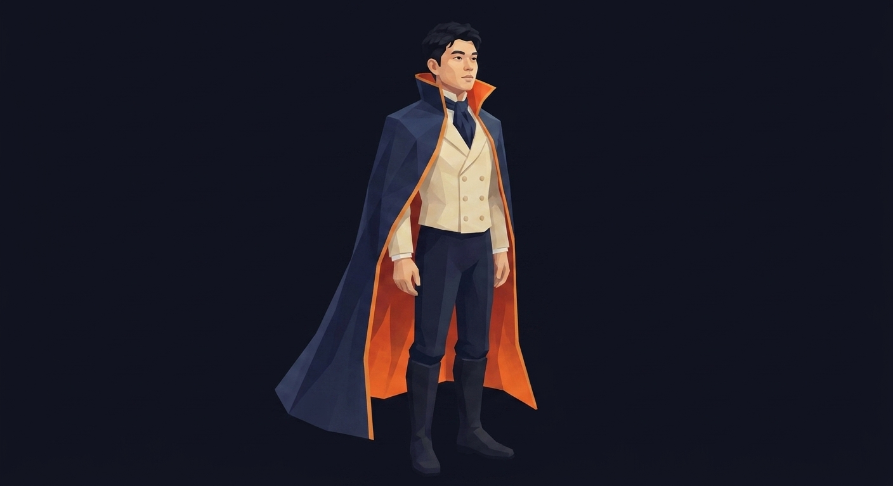
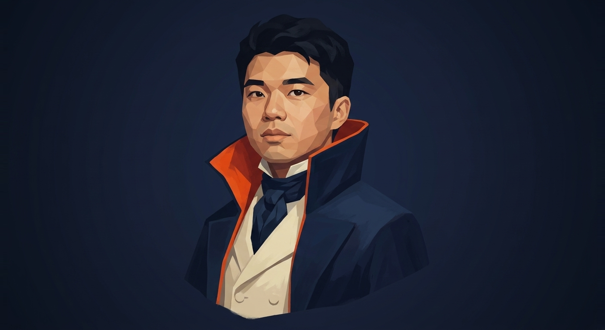
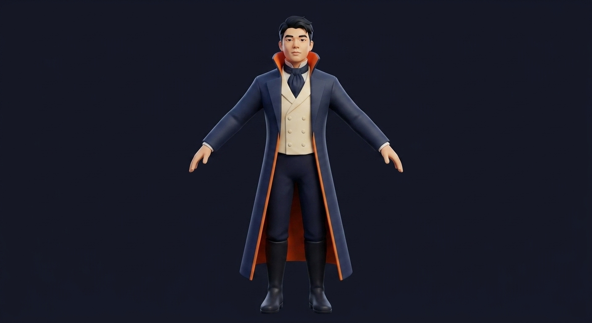
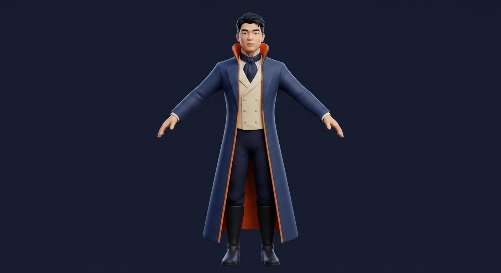
2 · Reconstruct — the turnaround
Multi-view, one person. The front is the real input. The side and
the back are generated with the accepted front passed back as reference, so all
three are the same man — then reconstruction gets all three at once.

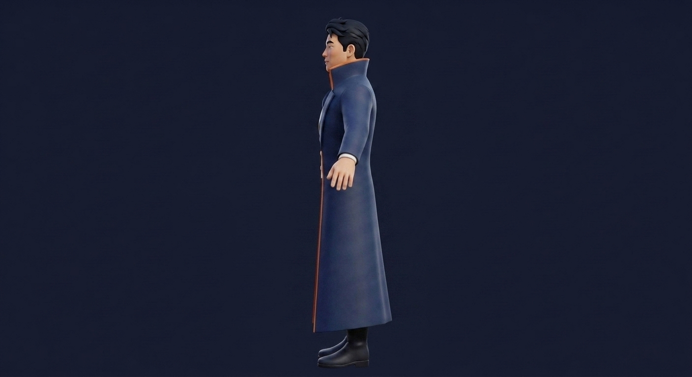
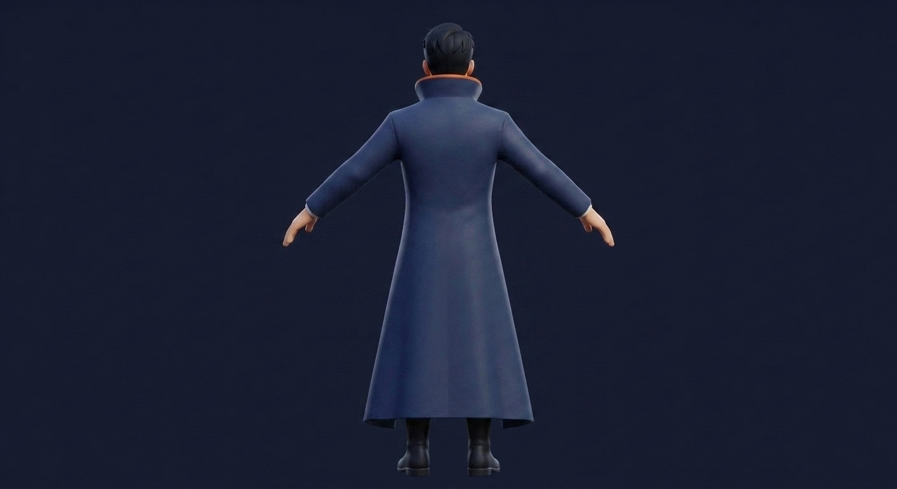
3 · Mesh — Tripo P1 Multi View
All three views feed one native 3D diffusion. Newest Tripo on the
Scenario catalog that takes multiple angles — newer than the Tripo 3.1 the project
started on. The turntable below is rendered from the delivered GLB.
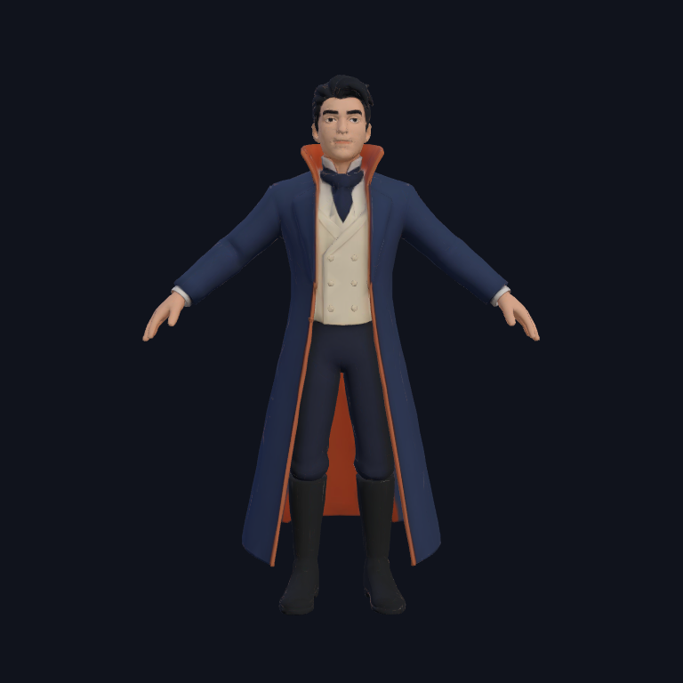
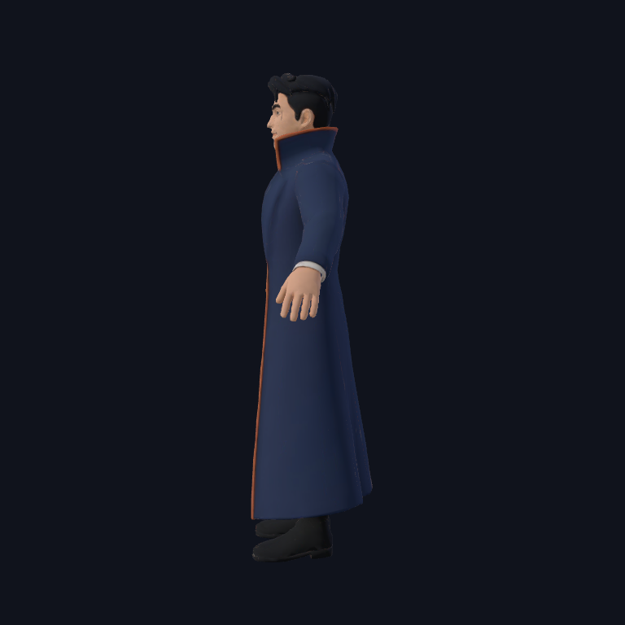
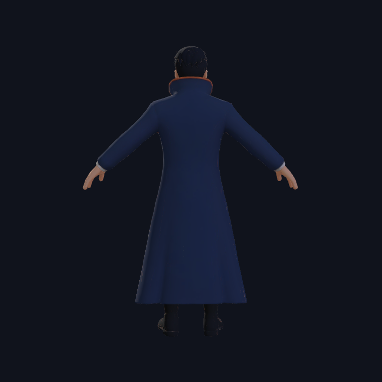
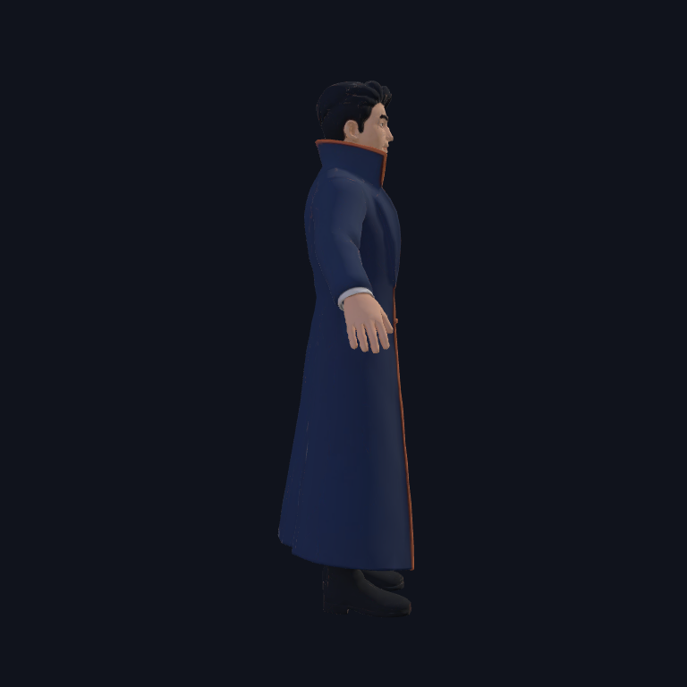
4 · Rig — Tripo Rigging 1.0, biped
The rigging track the project began with. The catalog's Rigging 2.5
turned out to be quadruped-and-up; Rigging 1.0 is the biped. It took the mesh
server-side (the reconstruction's own asset id — no re-upload) and returned a skinned
skeleton in a clean A-pose.
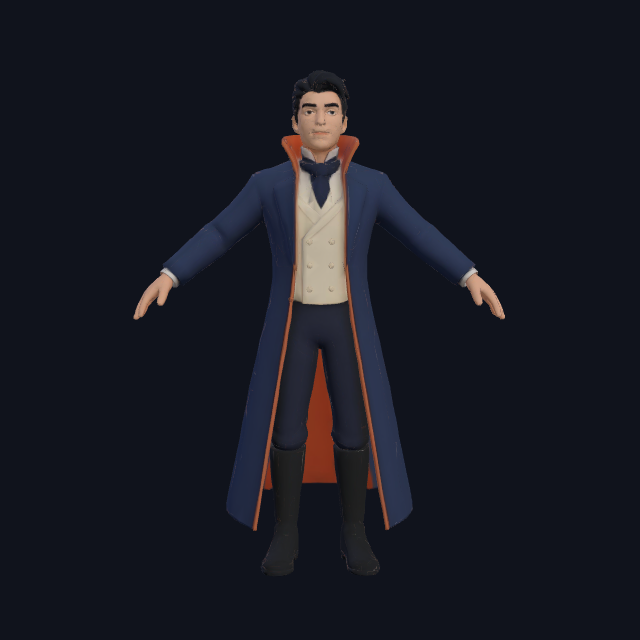
5 · Animate — the banked walk
Retarget, don't keyframe. The walk is a banked biped clip retargeted
onto the new skeleton at rigging time — the same move the first King demo made with a
Mixamo run. The viewer above is playing it on an AnimationMixer, on loop, right now.